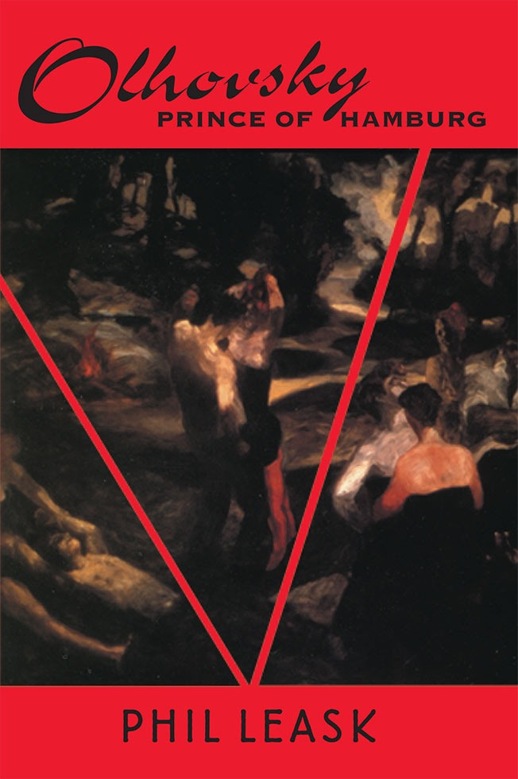

Olhovsky, Prince of Hamburg
Phil Leask

Description
He cannot bear how beautiful she is, he tells me, and sighs, and looks across at a woman with a skirt split to the top of her thigh, her legs crossed, her elbows on the bar in front of her, a cigarette in one hand. He lights a cigarette himself, and I close my eyes and let the smell of cloves drift over me, reminding me of everything, of my life before and after, of Lucy, of Urmilla and Olhovsky; above all Olhovsky. Hamburg, in Phil Leask’s third novel, is a city of the displaced. Accidents of personal history throw together an odd collection of strangers - English poet Michael Rothney, a Polish dancer, a German sculptor. They find themselves locked within the hypnotic orbit of Olhovsky, ambiguous, charismatic, sensual, a sailor and wanderer with a dubious past. Even before Olhovsky passes bay leaves crushed in his palm beneath the nostrils of his friends during their love-making, we know he is influential. One of those lovers, Rothney, is intrigued by Olhovsky, his mysterious hold over others and his dubious, perhaps mythical past. When Rothney and Olhovsky meet Urmila, an Indian woman whose husband runs a spice importing business, loyalty and trust become strained. A cold winter of snow and ice sets in. There is a long anxious wait for the thaw. Phil Leask has dreamed a story of wonderful strangeness into existence and sets it in the fragile, sparkling world of Hamburg ’ s winter... The author’s pen moves with the ease and grace of one long acquainted with the quirky side of this city. Terry McDonagh, Irish poet and dramatist living in Hamburg The characters are allowed their moments where we see into their uncertainties and into the untracked wilderness that ’ s in them. Rodney Hall Cover painting by John Anderson
Description
He cannot bear how beautiful she is, he tells me, and sighs, and looks across at a woman with a skirt split to the top of her thigh, her legs crossed, her elbows on the bar in front of her, a cigarette in one hand. He lights a cigarette himself, and I close my eyes and let the smell of cloves drift over me, reminding me of everything, of my life before and after, of Lucy, of Urmilla and Olhovsky; above all Olhovsky. Hamburg, in Phil Leask’s third novel, is a city of the displaced. Accidents of personal history throw together an odd collection of strangers - English poet Michael Rothney, a Polish dancer, a German sculptor. They find themselves locked within the hypnotic orbit of Olhovsky, ambiguous, charismatic, sensual, a sailor and wanderer with a dubious past. Even before Olhovsky passes bay leaves crushed in his palm beneath the nostrils of his friends during their love-making, we know he is influential. One of those lovers, Rothney, is intrigued by Olhovsky, his mysterious hold over others and his dubious, perhaps mythical past. When Rothney and Olhovsky meet Urmila, an Indian woman whose husband runs a spice importing business, loyalty and trust become strained. A cold winter of snow and ice sets in. There is a long anxious wait for the thaw. Phil Leask has dreamed a story of wonderful strangeness into existence and sets it in the fragile, sparkling world of Hamburg ’ s winter... The author’s pen moves with the ease and grace of one long acquainted with the quirky side of this city. Terry McDonagh, Irish poet and dramatist living in Hamburg The characters are allowed their moments where we see into their uncertainties and into the untracked wilderness that ’ s in them. Rodney Hall Cover painting by John Anderson
{kind=link}
Information
| ISBN | 1876044373 |
| Release | 2003 |
| Pages | 208 |
About the Author
Reviews
Terry Monagle, Eureka Street
Reviews The Shortlist Terry Monagle Eureka Street , Vol. 13, No. 7, September 2003 Michael Rothney is an English poet working on a suite of poems in the German city, Hamburg. He is attempting to shrive himself of a former lover. Rothney walks incessantly, at night, feeling for the pulse and lineaments of the city. He meets Olhovsky, a semi-mythological creature, a mermaid, a hermaphrodite beauty. We meet characters plagued by incompleteness. They long for the other, for the missing part of themselves. Their questing, their roiling hopes, seek relief in relationships, with a sexual partner or partners. Love appears to be the ground of human need, but it is fickle and treacherous. Desire, possession and belonging are its convenient and clandestine counterfeits. It’s a study of a city, too, which seeks its destiny with the same carnal energy as its inhabitants. The rhythm of the text, growing in intensity like Ravel’s Bolero , is sympathetic with the insistent walking of the characters as they explore the city. Leask’s characters are psychologically stateless, and grieve for a home. Though an Australian, Leask has lived in London for thirty years, travelling in Europe and returning to Australia. Leask’s book is about place, and rootlessness; about heartless loves and places of absence. It is a haunting book and seems likely to be a novel which will reverberate beyond its times.
Catherine Ford, The Age
Fiction Catherine Ford The Age , 28 June 2003 Nicolai Olhovsky, rugged up and ready for heartbreak, stands next to Michael Rothney, soft-spoken with a face ‘like a third division footballer’, waiting for the lights to go green on Hamburge Street, and they start up a conversation. Like startled lovers they remove to a bar to discover each other: Olhovsky, a sailor, fled Odessa long ago, hunted whales, then was stabbed by a woman in Palermo. Rothney, a Londoner, is writing his ‘Hamburg sequence’ in verse under the devotion of a ‘Mexican professor in California’. His wife, Lucy, is in Africa working as a surgeon and he occupies their Hamburg apartment and garden, which is so deserted, he says, that it resembles 'the setting for a Tarkovsky film.’ Phil Leask, with astonishing fluency and speed, opens up Hamburg’s snow-buffered streets and bars and moves through his characters’ assignations as casually, and with almost as much psychic baggage, as they do themselves. When Olhovsky and Rothney go back to Esmerelda’s for coffee, we barely flinch when the evening ends with all three of them naked and a stranger downstairs singing a little Verdi. Hamburg, Leask wants us to know, is at least as wretched as fun as Berlin or Paris. And until the unhappily married Indian opthalmologist, Urmila Vasani, appears, the novel might just have been about trysts of the love-lorn, confused sexuality and homesickness. Leask’s story occasionally becomes as light-starved as a February afternoon on the Binnenalster, but it is beautifully, poetically strange too.
betterread.com.au Review
Hanna Torsh betterread.com.au (online), 2003 It is rare to find a contemporary novel which stands out for its style as much as its subject matter. This strange and wonderful new novel by Phil Leask, his third, is striking almost at once for its tone of self-conscious melancholy and its rather obvious theme of exile; English poet Michael Rothney is alone in Hamburg, lost in the obscurity that comes with being a stranger in a strange land, thinking of his love, his wife. On one of his late night wanderings through the dark and wintry city he meets an enigmatic man who calls himself Olhovsky and is instantly fascinated by him. Together they experience the city beneath the city and in doing so Michael is drawn even deeper into his own emotional journey away from his former life. A fairly typical bildunsgroman I thought, as I began. However, this novel is not typical, although it is definitely a ‘journey novel’, it contains more of the surreal than its beginning scenes intimate. The nighttime journeys are depicted as grey, shadowy episodes, edged with sexual desire and ambivalence, while Rothney’s daytime experience seems almost to exist on another plane. This is, in many ways, a novel of the night. Similarly the many characters he meets either are merely daytime creatures, mildly interesting versions of those you might meet in any modern novel, or nighttime ones, vivid caricatures, painted as explosively intelligent, unbearably unattainable or viciously sexual. The accumulated effect of these disparate episodes is to create a real sense of the surreality of Rothney’s existence, that of a writer, whose role is to both observe and participate, to create and to fall in love with his creation. I wouldn’t recommend this book to everybody, as the languidness of the style and its use of poetic image... make it less accessible than other works of modern fiction. That said, I would recommend it to those who really care about fiction, especially Australian fiction. It's wonderful to know that books like this - experimental, challenging, beautiful - are still being written.
Amazon.co.uk Review
Exile, melancholia, women, beer and deliverance Ced Jackson Amazon.co.uk (online), 8 September 2003 An adult book. A book for adults. As with Lawrence, there is the visceral shock of seeing inexpressible thoughts in cold print. And it is a cold book, from Hamburg’s frozen river to the hearts of men. Yet only when emotions are accepted coldly is there hope of redemption. Michael Rothney has fled to Hamburg in exile from his wife and her lovers. These torments he accepted, for how else could he love her. He accepted everything, asked for nothing ‘...but you were never as innocent as you like to believe, Michael. You think that you are the poet, standing back, observing, watching others live their lives as if you were not part of them.’ Olhovsky is his complement. Yang to Rothney’s yin. Mercurial, gypsy-like, an accidental sailor, long black hair cascading around his shoulders, a man for whom women are not a problem, but who seeks beyond achievement. Rothney and Olhovsky wander the frozen streets of Hamburg, picking up and discarding women and beer, Grail knights seeking that which they do not know. ‘We have come back from Jerusalem and have not found that we sought,’ as Jung proclaimed in his Seven Sermons to the Dead . Both Rothney and Olhovsky are invisible, flotsam on Hamburg’s sea, making no waves. And yet... ‘What we do is never done with impunity. I never thought I would have to be responsible for what I did. I thought I could do what I wanted and never have to care. And then it catches up with you, when you least expect it.’ ‘You don’t want to see that people are suffering. You don’t want to find that you might have been the cause.’ Age advances. Life is lived - it is unavoidable. Courage is all.